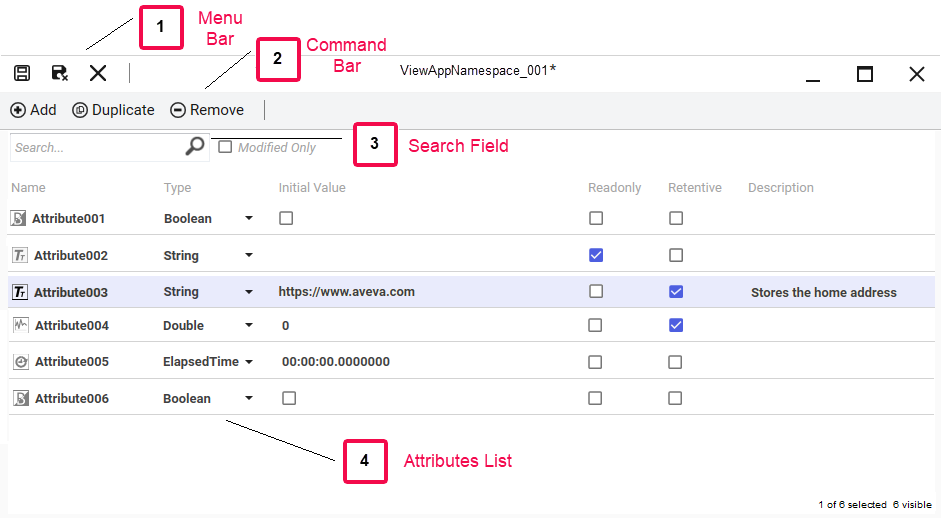
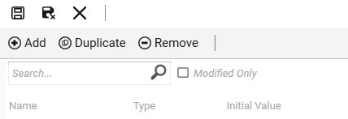
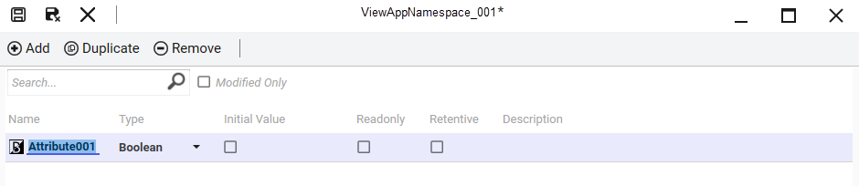
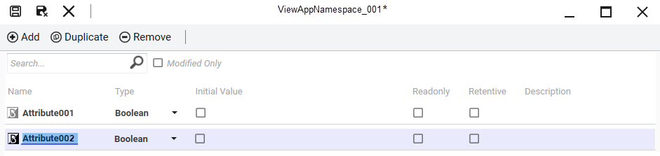
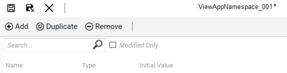

Before and after duplication: Attribute001 (Boolean type, selected) is duplicated to create an identical Attribute002. The duplicate preserves all original properties.
Module 7 — ViewApp Namespaces | Section 2 – Custom ViewApp Namespaces and Attributes
Pages 409–412
You can create a ViewApp namespace from the Graphics tab in the System Platform IDE. Note that the Graphics tab does not contain a default ViewApp namespace — you must create one explicitly. There are three ways to create a ViewApp namespace:
Once the ViewApp namespace is created, you can double-click it in the Graphics tab to open the ViewApp Namespace Editor.
The ViewApp Namespace Editor is the tool you use to create and configure attributes that can be used by all ViewApps in a Galaxy. The editor is organized into several key areas:

The editor contains four main areas:
| Area | Description |
|---|---|
| (1) Menu Bar | Commands to save, save and close, and close the ViewApp Namespace Editor. |
| (2) Command Bar | Commands to add, duplicate, and remove attributes from the list of attributes. |
| (3) Search Field | Enter text to filter the attribute list. The Modified Only checkbox filters for attributes with unsaved modifications. |
| (4) Attributes List | Table listing all attributes with columns for name, type, initial value, and more. Click a column header to sort. |
In the ViewApp Namespace Editor, use the Add command to add a new attribute to the list. A new attribute appears with the default name Attribute00n, but you can rename it immediately.
Once an attribute is added to the list, you can configure its properties:
| Property | Description |
|---|---|
| Name | The name of the attribute. |
| Type | Data type of the attribute. Options: Boolean, Integer, String, Float, Double, Time, ElapsedTime. Default: Boolean. |
| Initial Value | The starting value at runtime. For Boolean attributes, a checkbox is provided (checked = true, unchecked = false). Note: The Initial Value field does not support expressions. |
| Readonly | When checked, the attribute is read-only and cannot be written to. Default: false (read/write). |
| Retentive | When checked, the value is maintained if the ViewApp is shut down and restored when restarted. However, the value is not retained when a ViewApp is undeployed. |
| Description | Free text describing the attribute's purpose. |


The Duplicate command creates a copy of the selected attribute with all of its properties preserved. You can then configure the new attribute as needed. Select multiple attributes using the Shift or Ctrl keys and duplicate them all in a single operation.
Similarly, the Remove command deletes the selected attribute. You can remove multiple attributes at once using Shift or Ctrl multi-select.


You can enter a search string to filter the list to only attributes that contain the search string in their name. This is useful when a namespace contains many attributes. If the Modified Only checkbox is checked, only attributes with unsaved modifications are shown.
ViewApp namespaces are standalone, reusable objects that can be moved between different Galaxies. They can be exported as .aaPKG files. Once imported into a new Galaxy, the namespace can be customized as needed.
You can create one via the Galaxy menu (New | ViewApp Namespace), the keyboard shortcut Ctrl+Shift+V, or by right-clicking in the Graphics tab and selecting New | ViewApp Namespace.
Boolean, Integer, String, Float, Double, Time, and ElapsedTime. The default type is Boolean.
No. An attribute cannot be designated as both read-only and retentive. These two properties are mutually exclusive.
ViewApp namespaces are exported as .aaPKG files, which can be imported into other Galaxies and customized as needed.